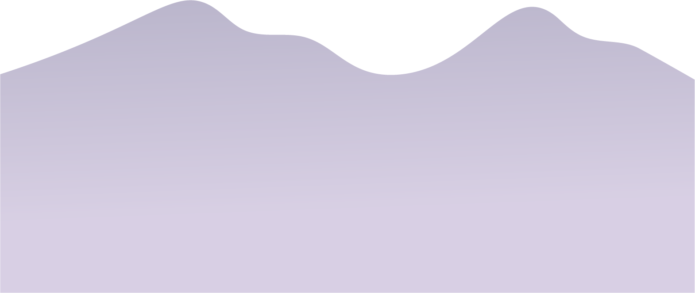
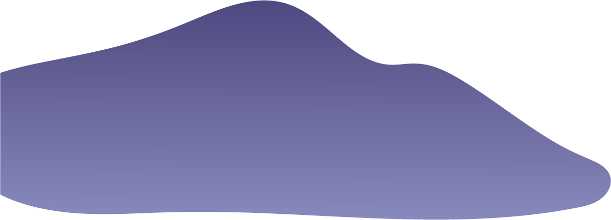
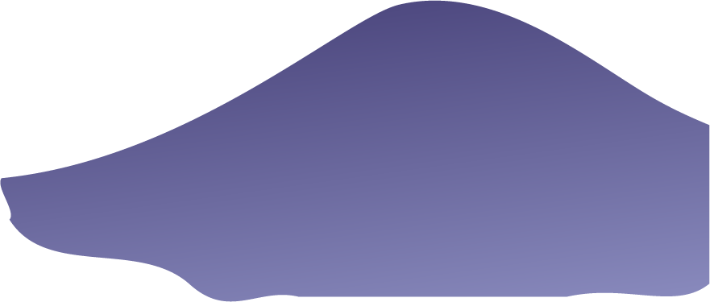
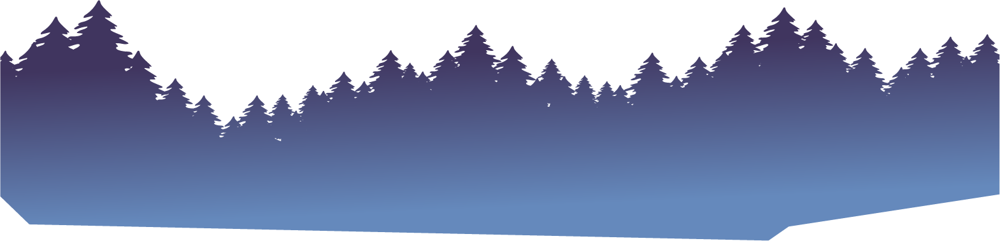
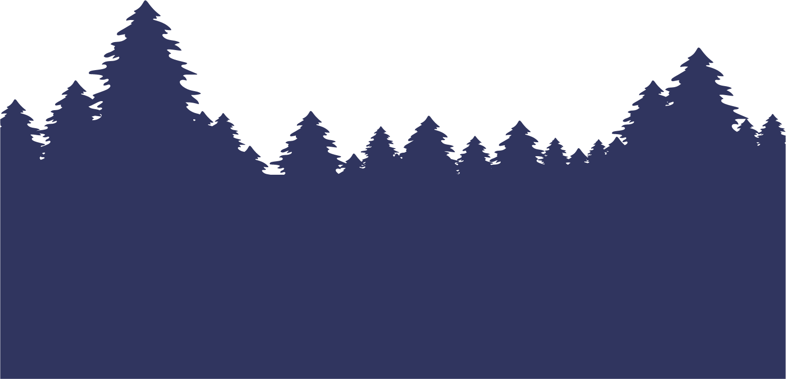

關於我-陳怡彣Claire
建議使用平板、桌機觀看Parallax Scrolling效果
    我是陳怡彣Claire
多媒體設計系畢業後，一直在設計領域學習精進將近十年，從前期設計規劃軟體到網站設計製作 (HTML5、SCSS、JS、RWD、Bootstrap)。
我畢業於國立台中科技大學多媒體設計系，這段時間裡，我一直專注在網頁設計領域的深耕。一開始，我使用Dreamweaver、HTML、CSS等工具製作各種專案，透過這些實踐累積了相當豐富的能力。隨著經驗的增長，我更進一步投入了教學領域，成為連鎖補習班的設計講師。這段時間的教學經驗不僅鞏固了我的技能，還培養了我在與他人合作中的溝通與協作能力。
在職業生涯的中期，我開始深入接觸軟體開發的過程，與多位工程師合作，共同參與專案的開發。在這個過程中，我負責版面設計與切版，這讓我更全面地了解了網頁開發的流程。同時，為了提升使用者體驗和網站的可見性，我積極導入了SEO（搜尋引擎優化）策略，確保網站在搜尋結果中有更好的排名。面對各種瀏覽器的支援差異，我學會了針對不同版本的IE進行優化，使客戶的網站在各種環境下呈現出最佳效果。這段時間的合作經驗不僅豐富了我的技術層面，也提升了我解決問題和協同作業的能力。
隨著職涯的發展，我進一步深入研究CSS，探索其中的種種可能性。我不僅學會了使用SCSS，更深入了解樣式的變數，並學習了各種新奇的語法。在前端開發方面，我熟練運用JavaScript，透過它來實現更豐富的互動效果，提升使用者體驗。我使用Git版本控管，能夠有效地管理專案的程式碼，保障團隊協作的順暢。強大的編輯器如VS Code是我的首選，它的豐富擴充套件和智慧型功能讓開發過程更加高效。 除此之外，我有初略的漸進式框架Vue.js的使用經驗，透過Vue，我能夠更輕鬆地構建動態且高效的使用者介面。在地圖顯示方面，我運用Leaflet.js，這是一個開源的JavaScript函式庫，用於製作互動式地圖。同時，我嘗試使用Lottie，這個JavaScript庫能夠使設計師輕鬆地在網頁上嵌入高品質、輕量級的動畫。這樣的技能組合讓我能夠為專案提供更豐富、生動的互動元素，並隨時應對不同的需求。 在專案開發中，我經常使用Bootstrap CSS框架和SCSS，這兩者使我能夠更迅速地構建響應式且具備現代感的網頁。此外，在參與政府機關部門的專案中，我學到了建構無障礙網頁的經驗，這讓我更加關注使用者的多樣性需求，確保我的設計能夠讓所有人都能輕鬆地存取。這樣的實戰經驗加上專業知識，使我相信我能夠在貴公司的團隊中發揮卓越的作用，為每個專案提供更完整且符合最佳實踐的前端開發解決方案。我期待能夠與您的團隊攜手合作，共同打造出更卓越的網頁設計作品。